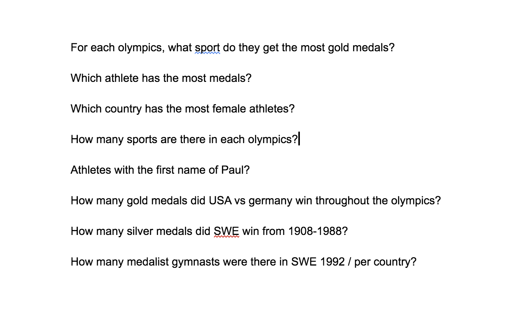
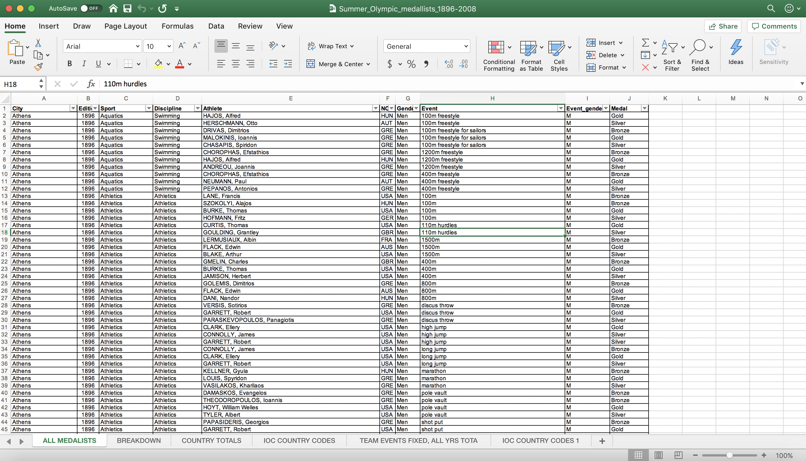
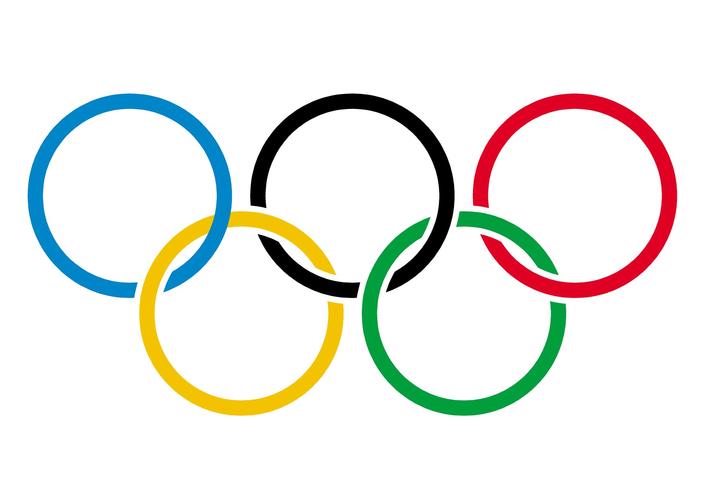

The Olympic Games through 1896 to 2008

How have the Olympic Games changed over time through the years
Data source: Link to dataI selected the data for the Summer Olympics from 1896-2008 because I thoroughly enjoy the Summer Olympics and was curious about how they have evolved over the years. Sports have been a big part of my life, and I was interested in how sports became accepted throughout the years, and added on to the Olympics. I was also interested in different specifics of years and country rivalries. Thus the questions I had come up with prior to exploring the data, were generalized questions everyone would have, and then very specific to my own taste.

Exploring the data initially in excel seemed overwhelming, the amount of sports, athletes and medalists from each country was a lot but when putting it in the visualizations on Tableau it all became more clear.

I first started off by comparing just years and the number of sports. I found using a line graph would be better than a bar chart to see the progression throughout the years and the relationship between each point of data. This was interesting to me because it shows how sports have become more recognized throughout the years whether its because of popularity or gender acceptance. The amount of sports from 1896 to 2008 increases by 1,891 sports.
After examining this data, I looked at how many gold medals were earned for each sport. Originally I only used the years the olympics were held and the number of gold medals, but I found it lacking information. I expanded this graph to cities the Olympics took place and how many medals per sport that year. This correlates to the last graph, since you can see the increase in the number of sports again throughout the years. Another piece of information I found interesting, is the increase in group sports and how that affects the number of medals handed out as well.
One big rival I am interested in is Germany vs USA. They have a history in previous sports and my cousins live in Germany, so I found it more personable. I used pack bubbles to easily show that USA dominates in gold medals. I found this more visually appealing since a graph would be more detailed than the story and less friendly to grasp the big picture I am trying to portray. Germany has some similar sized bubbles as the USA, but the USA has exponentially larger ones especially in the later years.
I wanted to fit in two important sets of data without causing over clutter in the dashboard. I used images as buttons to portray these. The first image being of a gymnast, that when clicked you can see data for countries that received medals in gymnastics in 1992. This data is very specified but, gymnastics is one of my favorite sports and knowing more recent information about countries that normally dominate in gymnastics, it was interesting to see how that was different back then. I also just used asterisks as points in the data, since it was more visually appealing to the eye. The second image-button used was of a female athlete and when clicked the data of the number of female athletes in every country. This to me was important to include since women in sports is still being revolutionized. Women playing hockey or basketball is still rather ignored than women playing volleyball. Accepting women athletes in sports that have a gender stereotype is still being battled. It was important to see what countries this revolution is moving forward, with larger amounts of female athletes in the games, vs the ones where it's still not normalized for women to make sports a career.
Finally, the graph I chose in the bottom right corner of my dashboard, is the number of athletes with the first name Paul. I chose this graph to be put in because it was very specific and kind of weird. No one ever goes looking for this information, but if someone named Paul was interested, they would know how many other famous athletes were named the same.
I created some extra graphs but decided not to include them. The graphs I created were Sweden's Silver medal Earnings from 1908-2008. I decided not to include this since it did not incorporate all the years the data provided. I also found people are more interested in gold medal earnings than silver. I also created a graph of every athlete with their medal count. I did not include this because it was too much data and too messy for a reader to look through. It would be hard to gather an ideal generalization or compare athletes in this graph since there's too many points.
Overall, this data shows different aspects of the evolution of the Summer Olympics from 1896-2008.
